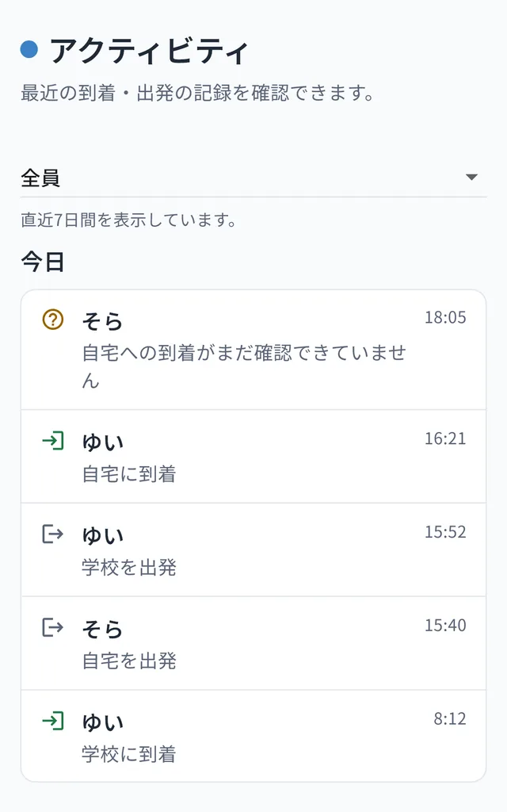

位置情報の使い方
ARRVDは位置情報を使います。メンバーのiPhoneで、iOSの位置情報サービスが登録した場所への到着と出発を検知します（位置情報の許可を「常に」にすると、アプリを開いていなくても検知します）。誰かの現在地を表示したり、移動の履歴を作ったりすることはありません。
ARRVD iPhone向け 家族の到着確認アプリ
ずっと居場所を追い続けることなく。
自宅や学校、習い事など、家族で登録した場所への到着をお知らせ。予定の時刻までに到着が確認できないときも知らせます。現在地の地図も、移動の履歴もありません。


自宅、学校、習い事、職場など、家族で登録した場所に到着したことを確認できます。
到着したとき、そして予定の時刻までに到着が確認できないときに、オーガナイザーにお知らせが届きます。出発のお知らせは場所ごとにオンにできます。
現在地の地図も、移動の履歴もありません。家族に共有されるのは登録した場所への到着と出発だけで、その記録は7日で自動的に削除されます。
オーガナイザーが自宅や学校などの場所を登録し、その場所でどのメンバーの到着を確認するかを選びます。
その場所に到着する予定の曜日と時刻を設定します。
メンバーのiPhoneが到着を検知すると、オーガナイザーに通知されます。予定の時刻までに確認できないときは「まだ確認できていません」とお知らせします。
家族は1回限りの招待リンクで参加し、共有するかどうかを本人が選びます。
ARRVDは位置情報を使います。メンバーのiPhoneで、iOSの位置情報サービスが登録した場所への到着と出発を検知します（位置情報の許可を「常に」にすると、アプリを開いていなくても検知します）。誰かの現在地を表示したり、移動の履歴を作ったりすることはありません。
オーガナイザーは18歳以上、メンバーは13歳以上の方が利用でき、13歳未満の方は利用できません。13〜17歳のメンバーは、保護者とご本人の両方が同意するまで何も共有されません。メンバーはいつでも共有をやめられます。
ARRVDはiPhone向けのアプリで、マレーシアと日本にお住まいの方を対象にしています。無料のプランがあります。
検知はiOSやiPhoneの設定、電波の状況に左右されるため、到着の検知が遅れたり、検知できなかったりすることがあります。ARRVDは緊急サービスではありません。
一日一枚のカードと、ひとつの問い。占いではなく、自分を振り返るための小さなひと休みです。
Webですぐに使えます。ダウンロードは不要です。
文字をつないで言葉を見つけ、森を育てる言葉パズル。
App Storeで配信中
futodamaは、毎日を少し軽やかにするシンプルなアプリをつくるインディペンデント・プロダクトスタジオです。ARRVDは、この考え方をいちばんまっすぐに形にしたプロダクトです。
安心は、監視しすぎなくてもつくれる。
常に見張ることなく、安心は生み出せると考えています。
複雑にするより、わかりやすく。
複雑にすることよりも、わかりやすくすることを選びます。
テクノロジーは、少し軽くするために。
生活を重くするのではなく、少し軽くするための技術でありたい。
All is well.